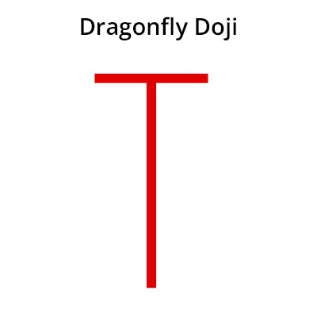

டிராகன் ஃபிலே டோஜி முறைமை ஒரு வணிக முறைமை ஆகும்,
இது பங்கு சந்தையில் உயர்ச் சூழ்நிலையை காட்டி கொடுக்கின்றன.
இந்த முறைமை ஒரு தனி மொழிகுவினால் உருவாகின்றன. அந்த மொழிகு
அதன் திறக்கும் மூடி விலையே ஒன்று.
டிராகன் ஃபிலா டோஜி முறைமை ஒரு பலமான ஊட்ட சூழ்நிலையை சுட்டிக்காட்டுகின்றது.
இந்த முறைமையைக் காணும்போது, பங்கு சந்தை ஊட்ட சூழ்நிலையில் வணிகம் செய்யலாம்.